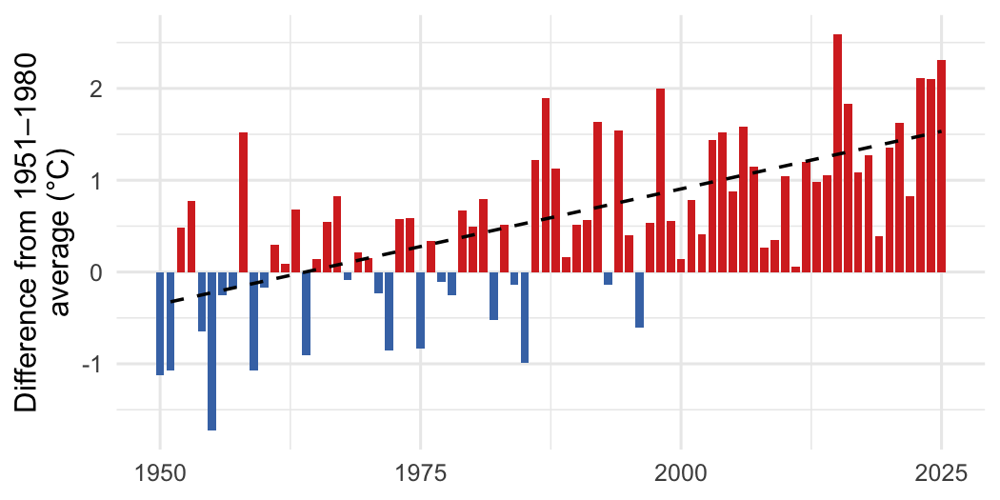

How far any BC watershed’s climate has shifted from your chosen baseline
cd measures how much the climate of a watershed or any other area in British Columbia has changed: air temperature, precipitation, humidity, soil moisture and snow, by season and year since 1950, compared with whatever reference period you choose, with the trend and how much it has moved. It reads ERA5-Land reanalysis from a public catalog that needs no account, so restoration can be planned and monitored against the climate a site has now rather than the one it had. It also gives daily air temperature at any point in the province, for stream-temperature models and degree-day work, and its baseline and trend steps take any annual series, such as streamflow or stream temperature.

Annual mean air temperature in the Kootenay Lake watershed group, compared with its 1951–1980 average. Red years were warmer, blue years cooler; the dashed line is the trend since 1951.
Installation
pak::pak("NewGraphEnvironment/cd")cd is under active development and its functions change between releases (see NEWS). Pin a release for reproducible work: pak::pak("NewGraphEnvironment/cd@vX.Y.Z").
The example below also needs sf, Kendall and zyp: pak::pak(c("sf", "Kendall", "zyp")).
Example
Extract a series for an area, compare it with a baseline, and test the trend. This is the run behind the figure above:
library(cd)
catalog <- cd_catalog()
aoi <- sf::st_read(
system.file("extdata", "example_aoi_kotl.gpkg", package = "cd"),
quiet = TRUE
)
ts <- cd_extract(catalog, aoi, variables = "tmean", periods = "annual")
bl <- cd_baseline(ts, baseline_years = 1951:1980)
ano <- cd_anomaly(ts, bl)
trn <- cd_trend(ano, trend_start = 1951)
cd_summary(trn)
#> # A tibble: 1 × 7
#> Parameter Period Slope Years `Total Change` Unit `p-value`
#> <chr> <chr> <dbl> <int> <dbl> <chr> <dbl>
#> 1 Mean temperature Annual 0.025 75 1.9 °C 0Files are cached after the first read and downloaded again only when they are republished. Extracted rows record which commit of cd built each file they came from.
Learn more
- Climate Departure for the FWCP Peace Region: trends, snowpack and the spatial pattern across a large northern region, by ecoregion and watershed group.
- Climate Departure for the Kootenay Lake Region: the same report for the southern Kootenays, where precipitation changes sharply from east to west.
- How the Weather Has Changed in Three Northern BC Watersheds: a short, plain-language story for readers with no climate background.
- Function reference
Ecosystem
| Package | Role |
|---|---|
| cd | Climate departure: baselines, anomalies and trends, and ERA5-Land climate (this package) |
| wet | Stream flow and water temperature for BC’s Freshwater Atlas |
cd computes the departures from wet’s yearly station values.
Data and methods it builds on
The climate data are ERA5-Land (Muñoz-Sabater et al. 2021), produced by ECMWF for the Copernicus Climate Change Service and read from the DestinE Earth Data Hub. The published layers contain modified Copernicus Climate Change Service information, under CC BY 4.0. Trends are Mann-Kendall tests with Theil-Sen slopes, from the Kendall and zyp packages. cd’s core climate variables and its ecoregion and watershed framing follow bcgov/bc_climate_anomaly, a Shiny app by the Province of British Columbia (Aseem Sharma and contributors).